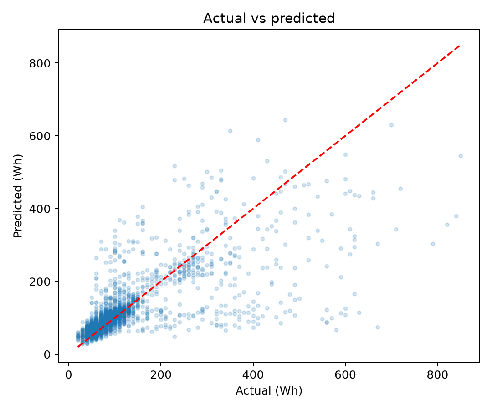
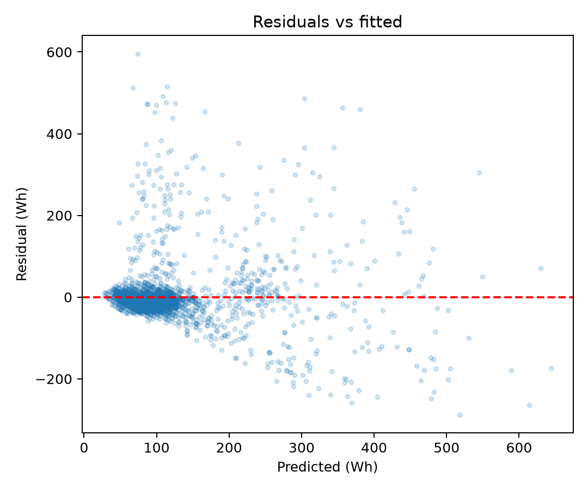
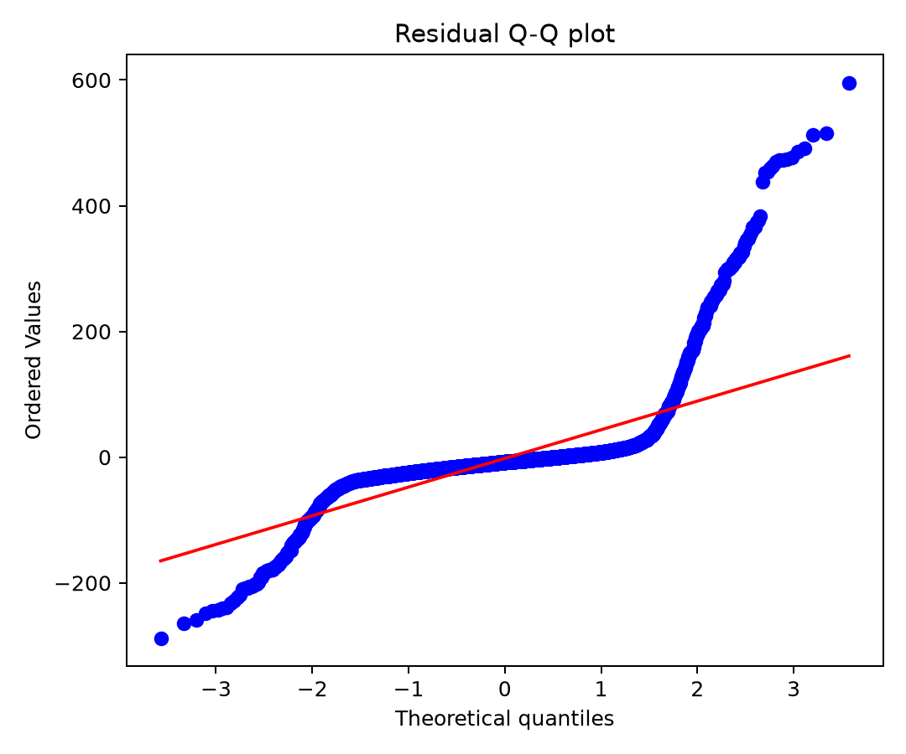
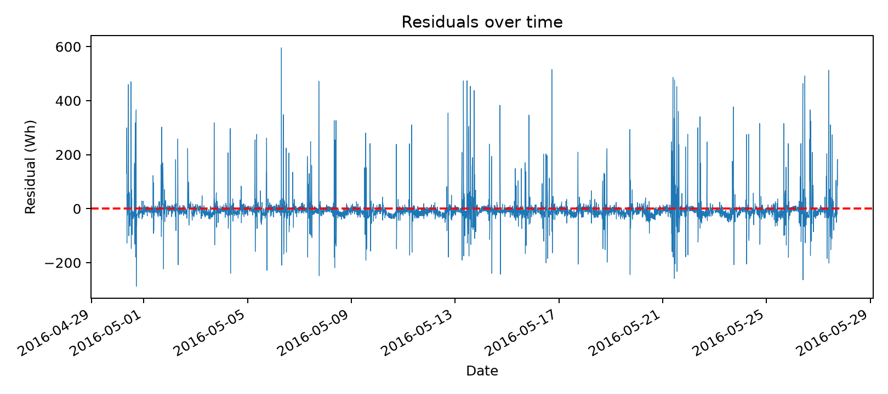

🏆 最終選定模型 (Selected Model) vs. 全特徵基準 (Baseline)
依據 CRISP-DM 第五階段，在完全未參與特徵篩選與訓練的 20% 獨立測試集上進行評估
| 模型名稱 | 使用特徵數 (k) | 測試集 RMSE | 測試集 MAE | 測試集 R² | 校正後 Adjusted R² | 評價 |
|---|
🔄 CRISP-DM 資料探勘標準流程實踐
跨越商業問題至模型部署的完整生命週期
📈 特徵篩選演算法收斂曲線 (Feature Count vs. CV RMSE)
點選下方按鈕可即時切換各特徵選取方法的比較曲線，拖曳滑桿可查看對應特徵組合
當前 k 個入選特徵清單 (依演算法重要度排序)：
🎛️ 多元線性迴歸即時推論器 (Live Inference Simulator)
調整入選特徵的輸入數值，即時透過真實迴歸係數計算目標值
預測未來目標值 (ŷ)
各特徵邊際貢獻量 (Contribution Breakdown)：
⚖️ 標準化迴歸係數 (Standardized Beta Coefficients)
衡量各變數在去除量綱後的相對影響力大小（綠色正向促進，紅色抑制）
📉 測試集實際值 vs. 模型預測曲線
抽樣測試集區間進行實際觀測值與模型配適值之追蹤
🔍 模型殘差與統計假設診斷 (Residual Diagnostics)
驗證常態分佈、同質變異數與殘差獨立性
實際值 vs. 預測值散佈圖

殘差 vs. 配適值圖 (檢查異質變異)

殘差常態 Q-Q 圖

殘差隨時間序列分佈圖

※ 統計說明：預測區間採用校正集獨立計算之經驗式 90% 絕對誤差帶 (Empirical 90% Error Band)，避免直接假定殘差絕對常態同質而導致假性推論。
🏠 住宅感測器配置與空間架構
比利時 Stambruges 低能耗被動式住宅空間感測節點分析
T6, RH_6 — 北側外牆 (Outside North) ⭐ 關鍵特徵
無太陽直射光照（常態背陽陰影區）。避免了東南西面日光照射外殼導致虛高 5°C~15°C 之輻射干擾，提供真實未受日照失真的建築外圍冷空氣微氣候，是建築冬季熱散失最顯著的邊界。
T2, RH_2 — 客廳 (Living Room)
家庭活動最頻繁核心區域，溫濕度直接反映住戶起居狀態與通風調節，入選 8 個核心特徵之一。
T3, RH_3 — 洗衣房 (Laundry Room)
洗衣機、烘衣機等大功率用電設備所在地，運轉時具有顯著的產熱升溫效應，入選 8 個核心特徵之一。
T1, RH_1 — 廚房 (Kitchen)
電磁爐、烤箱、冰箱等烹飪家電所在地，烹飪時段產生明顯局部熱點。
T4, RH_4 — 辦公書房 (Office Room)
電腦螢幕、伺服器等常態低功耗電子設備放置處。
T5, RH_5 — 浴室 (Bathroom)
熱水器運作與淋浴時會產生劇烈濕度峰值與短暫高溫。
T7, T8, T9 — 熨燙室 / 次臥 / 主臥
睡眠與靜態休息空間，溫度由中央暖氣恆溫控制，波動相對較小。
Chièvres 機場氣象測站 (Weather Station)
每小時更新並內插提供室外氣溫 (T_out)、大氣壓力 (Press_mm_hg)、室外相對濕度 (RH_out)、風速 (Windspeed) 與能見度 (Visibility)。
🌦️ 實驗期間氣候與季節背景
2016 年 1 月 11 日至 2016 年 5 月 27 日（共 137 天）氣候統計